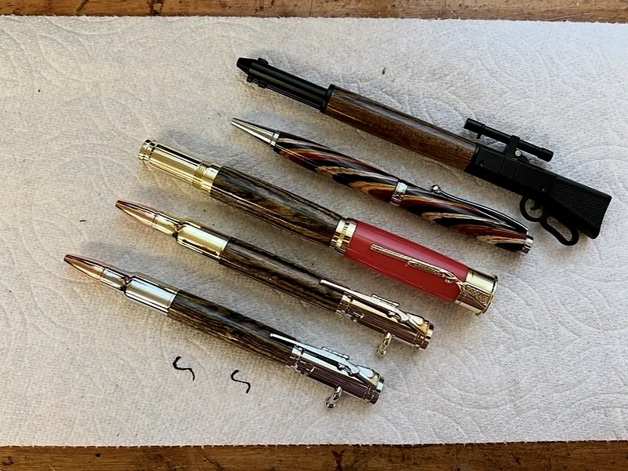
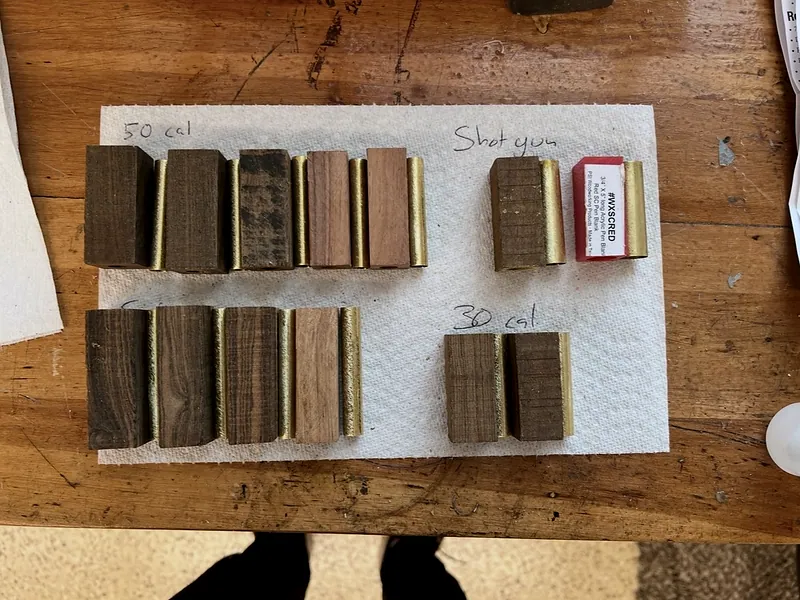
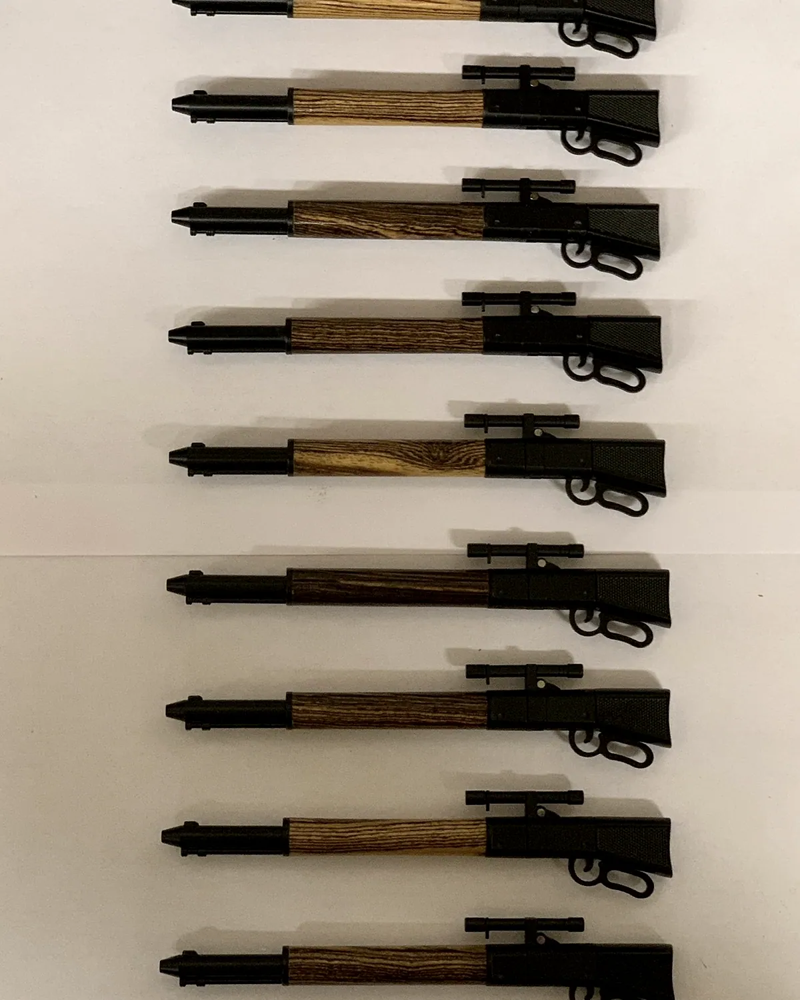
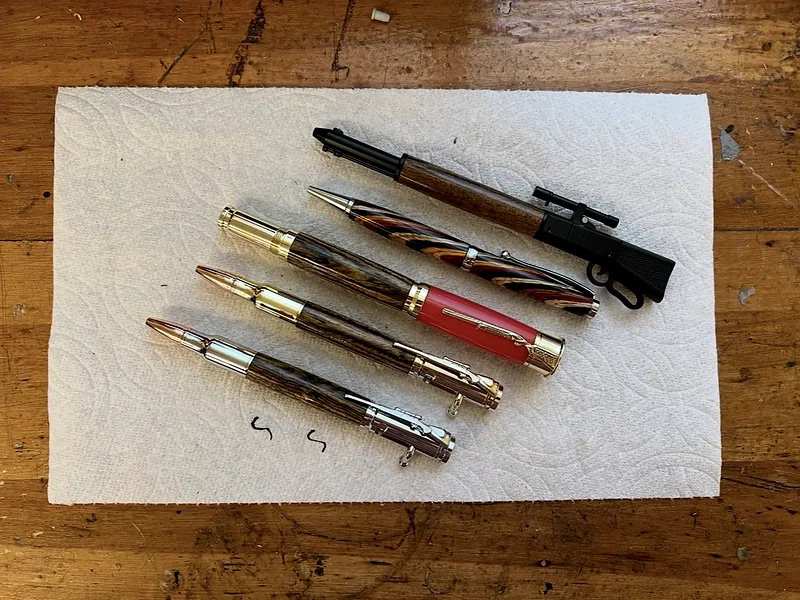

Precision Woodturning
Pens turned from raw blanks on the lathe. A repeatable press-fit process held across a thousand pieces, where every blank is different and the geometry never is.

Every blank is different. The geometry never is.
A pen looks like a craft object and behaves like a tolerance problem. The blank is wood or acrylic, so no two pieces have the same grain, density or how they want to cut. The hardware it has to accept does not care about any of that. It needs a specific diameter and a specific length, every time.
That gap is the whole exercise. Hold a repeatable process across a thousand pieces in a material with no consistent properties.
The brass tube is the datum. Every operation after it references it, so if it goes in crooked nothing downstream can save the part.

Six operations, and the first one decides the rest.
Drill and sleeve
The blank gets drilled and a brass tube epoxied inside. That tube becomes the reference for every operation after it, which makes drilling straight the highest-leverage step in the whole process.
Turn to diameter
Turned between centres off the tube, down to the diameter the hardware expects. Wood and acrylic want completely different speeds and completely different tools.
Square the ends
Faced square to the axis and to length off the tube. This is what decides whether the finished pen is straight or has a visible step where the parts meet.
Sand and finish
Through grits, then finish. Same sequence every time, because varying it is how you get a batch where half the pieces look different.
Press fit, no fasteners
Components press into the tubes on an interference fit. Too loose and the pen spins in the hand. Too tight and the blank splits. There is a band and you have to live inside it.
Check against hardware
The kit is the gauge. A piece either accepts its hardware to the right depth or it is scrap, and there is no adjusting it after the fact.


It is the cheapest possible lesson in process control.
A thousand pieces is a lot of chances to find out which step you were being sloppy about. Every split blank was an interference fit I got wrong in one direction, and every one that spun in the hand was one I got wrong in the other. The failures are small, fast and cheap, which makes them very good teachers.
It is the same skill the machine shop wanted: know what your datum is, know which operation the rest of the part depends on, and do that one carefully.